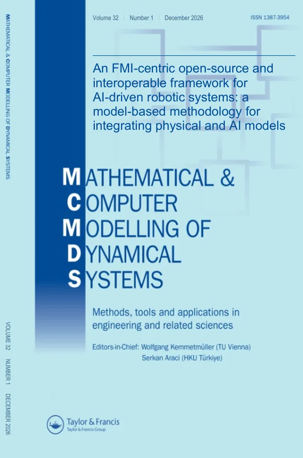
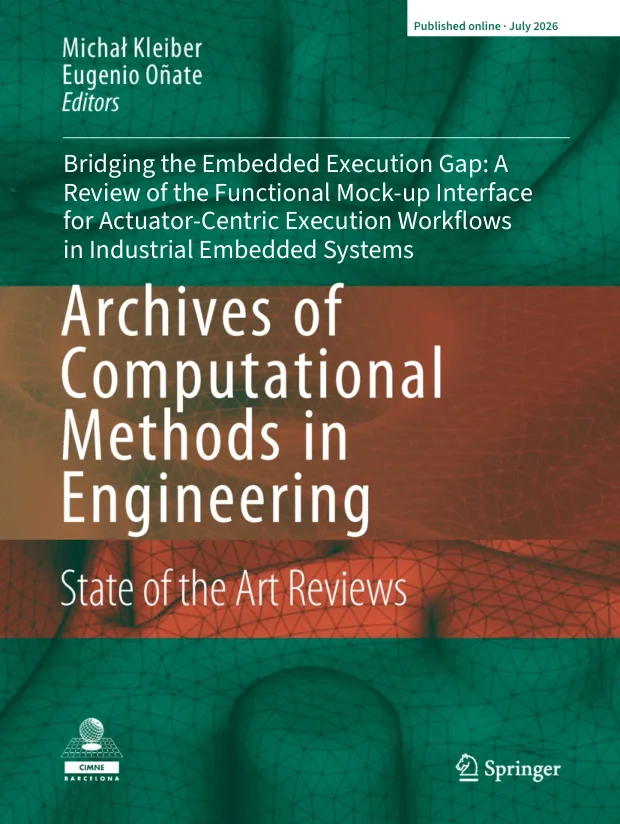
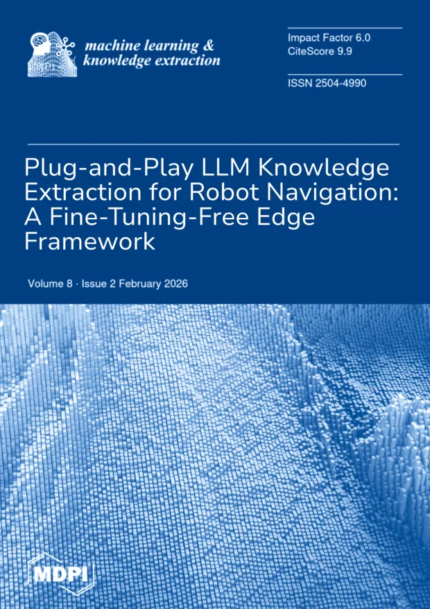
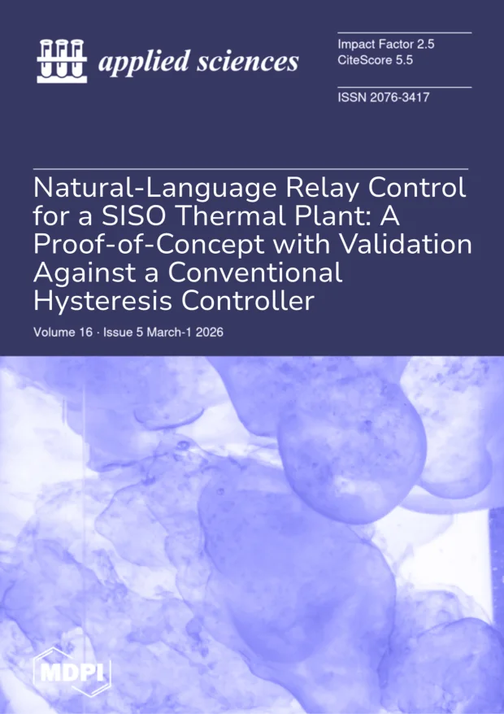
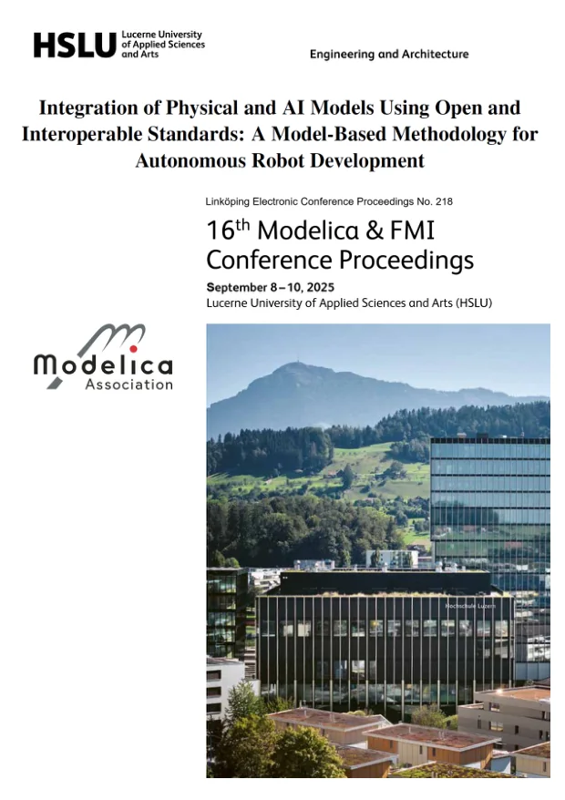

Publicaciones científicas · Scientific publications
Research that moves from models to reality.
Five first-author, peer-reviewed and open-access contributions on interoperability, embedded execution, edge intelligence, autonomous robotics and language-guided control.
-

An FMI-centric open-source and interoperable framework for AI-driven robotic systems: a model-based methodology for integrating physical and AI models
Mathematical and Computer Modelling of Dynamical Systems, 32(1), 2707718
A modular, open-source methodology integrating OpenModelica FMUs, ONNX perception and ROS 2 into a reproducible robotic workflow validated against an industrial baseline.
FMI / FMUOpenModelicaONNXROS 2 -

Bridging the Embedded Execution Gap: A Review of the Functional Mock-up Interface for Actuator-Centric Execution Workflows in Industrial Embedded Systems
Archives of Computational Methods in Engineering
A systematic review of FMI 2.0/3.0, eFMI and GALEC pathways for moving validated actuator models toward deterministic, resource-bounded embedded execution.
FMI 3.0eFMI · GALECScheduled ExecutionEmbedded systems -

Plug-and-Play LLM Knowledge Extraction for Robot Navigation: A Fine-Tuning-Free Edge Framework
Machine Learning and Knowledge Extraction, 8(2), 49
An on-device LLM augmentation framework that preserves a deterministic 50 Hz control loop while improving navigation accuracy and trajectory efficiency on a real TurtleBot3.
Large language modelsEdge AIJetson AGX OrinTurtleBot3 -

Natural-Language Relay Control for a SISO Thermal Plant: A Proof-of-Concept with Validation Against a Conventional Hysteresis Controller
Applied Sciences, 15(24), 12986
A local LLM executes a relay-with-hysteresis policy expressed in plain English, matching a conventional controller in a 1000-step thermal-process simulation.
Natural-language controlRelay with hysteresisLocal LLMSISO thermal plant -

Integration of Physical and AI Models Using Open and Interoperable Standards: A Model-Based Methodology for Autonomous Robot Development
Proceedings of the 16th International Modelica & FMI Conference
A modular methodology combining FMI, ONNX, ROS 2 and Gazebo to develop autonomous robotic systems using open, vendor-neutral technologies.
Autonomous roboticsFMIONNXROS 2Gazebo